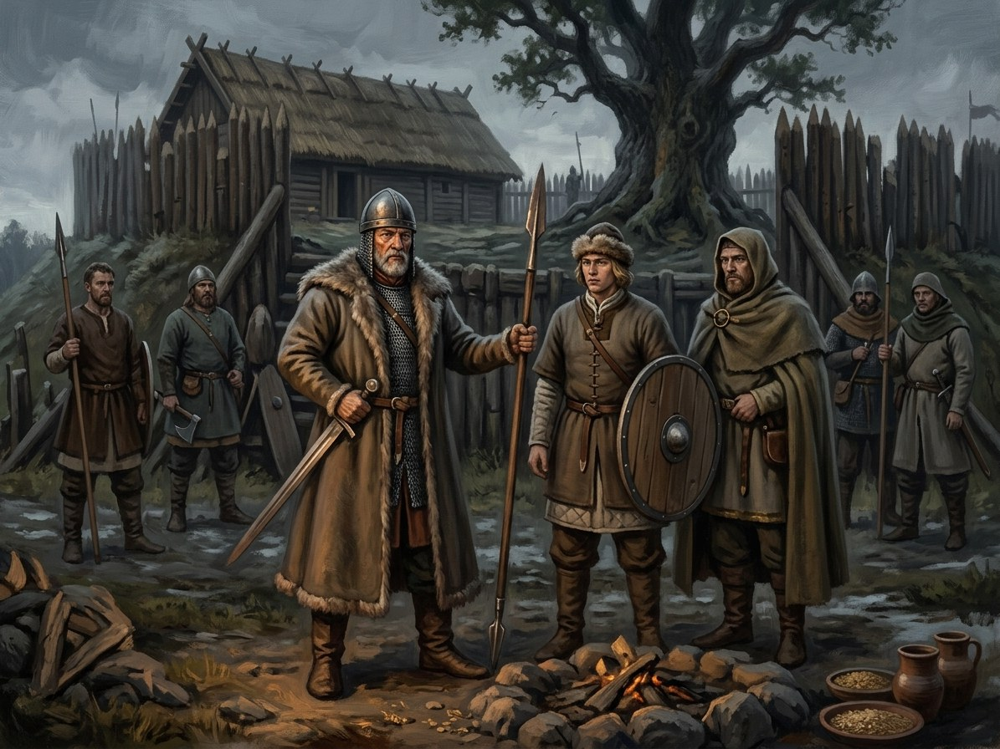

Kęstutaičiai (Kęstutis’s line)¶
Relations
Ally: Alšėniškiai (Holszański, princes of Halshany) (1418–1430) — Julijona married Vytautas. · House of Luxembourg (1429–1430) — The Lutsk crown offer. · Masovian Piasts (1382–…) — Danutė married Janusz I; Masovia sheltered Vytautas in 1382. · Rurikids of Moscow (1391–1430) — Sofija married Vasily I (wars of 1406–08 notwithstanding).
Enemy: Čartoriskiai (Czartoryski) (1440–1440) — Killers of Žygimantas, 20 Mar 1440.
Feud with: Algirdaičiai (Algirdas’s line) (1380–1392) — Jogaila and Skirgaila against Kęstutis and Vytautas. · Algirdaičiai (Algirdas’s line) (1432–1440) — Švitrigaila against Žygimantas.
Member of: Gediminaičiai (House of Gediminas) — Branch: Kęstutis and his sons. · Grand Duchy of Lithuania
Members: Kęstutis · Vytautas · Žygimantas Kęstutaitis
Patrons: Gintaro Karalienė (Amber Queen)
Kęstutaičiai (Kęstutis’s line)

Kęstutaičiai (Kęstutis’s line) · faction¶
Type |
faction |
Note |
Dynastic branch of Duke Kęstutis: Vytautas, Žygimantas, Danutė, and their loyalists. |
Overview¶
[Historical record] Kęstutis held the western half of the realm from Trakai (1345-82); he was captured and escaped from Marienburg in 1361, and died at Krėva on 15 Aug 1382 (strangled, per most accounts). His sons: Vytautas (c. 1350-27 Oct 1430), Tautvilas (killed Sep 1390 at the Crooked Castle, per Wigand of Marburg) and Žygimantas (hostage c. 1389/90-1398; Grand Duke 1432-20 Mar 1440, murdered at Trakai). Their allies: Samogitia and the Masovian husbands of their sister Danutė. The line ends with Žygimantas’s son Mykolas, exiled and dead in 1452.
Wants (by book)¶
Book |
Goal |
Leverage |
Red line |
|---|---|---|---|
VI |
Hold the border; keep the Pact |
The hidden nine; Birutė |
Gediminid blood |
I |
Avenge Kęstutis; recover Trakai and Samogitia |
Vytautas’s use of the Order, 1383-84 |
No more imprisonment by his cousins |
II |
The throne (Ostrów, 1392); an empire |
Defection; the marriage web (Sofija, Moscow) |
The sons’ lives |
III |
Break the Order; Samogitia |
Grunwald; the Samogitian loyalty |
The reversion clause |
IV |
A crown and an heir |
Sigismund’s offer, 1429-30 |
The flame |
V |
Žygimantas holds what Švitrigaila would take |
The coup at Ašmena (31 Aug 1432) |
Mykolas dispossessed |
Patron Force¶
[The saga’s invention] The Amber Queen through Birutė; Perkūnas’s claim on Vytautas, contested by the Root-Mother. Its relics are the silver wolf, the pebble and Kęstutis’s sword.
Internal tensions¶
Vytautas has no son, and his younger brother Žygimantas is a hostage in Prussia for eight years and then a shadow at his court. Žygimantas, whom Vytautas called quiet, becomes a tyrant who counts doors and executes men on planted letters (Book V ch. 18-19, 22). Feud with the Algirdaičiai runs from Krėva to Trakai in 1440.
Notable members¶
Connections¶
graph LR
algirdaiciai["Algirdaičiai (Algirdas's line)"]
alseniskiai["Alšėniškiai (Holszański, princes of Halshany)"]
amber_queen["Gintaro Karalienė (Amber Queen)"]
czartoriskiai["Čartoriskiai (Czartoryski)"]
gdl["Grand Duchy of Lithuania"]
gediminaiciai["Gediminaičiai (House of Gediminas)"]
kestutaiciai["Kęstutaičiai (Kęstutis's line)"]
kestutis["Kęstutis"]
luxembourg["House of Luxembourg"]
masovian_piasts["Masovian Piasts"]
rurikids["Rurikids of Moscow"]
vytautas["Vytautas"]
zygimantas["Žygimantas Kęstutaitis"]
kestutaiciai -->|Member of| gdl
kestutaiciai -->|Member of| gediminaiciai
kestutaiciai -->|Feud with| algirdaiciai
kestutaiciai -->|Feud with| algirdaiciai
kestutaiciai -->|Ally| masovian_piasts
kestutaiciai -->|Ally| rurikids
kestutis -->|Member of| kestutaiciai
vytautas -->|Member of| kestutaiciai
zygimantas -->|Member of| kestutaiciai
amber_queen -->|Patron of| kestutaiciai
czartoriskiai -->|Enemy| kestutaiciai
luxembourg -->|Ally| kestutaiciai
alseniskiai -->|Ally| kestutaiciai
style kestutaiciai stroke-width:3px